楔子
如果你需要访问多个服务来完成一个请求的处理，比如实现文件上传功能时，首先访问 Redis 缓存，验证用户是否登录，再接收 HTTP 消息中的 body 并保存在磁盘上，最后把文件路径等信息写入 MySQL 数据库中，你会怎么做？
首先可以使用阻塞 API 编写同步代码，直接一步步串行即可，但很明显这时一个线程只能同时处理一个请求。而我们知道线程数是有限制的，有限的线程数导致无法实现上万级别的并发连接，过多的线程切换也抢走了 CPU 的时间，从而降低了每秒能够处理的请求数量。
于是为了达到高并发，你可能会选择一个异步框架，用非阻塞 API 把业务逻辑打乱到多个回调函数中，通过多路复用实现高并发。但此时就要求业务代码过度关注并发细节，需要维护很多中间状态，一旦代码逻辑出现错误就会陷入回调地狱。因此这么做不但 Bug 率会很高，项目的开发速度也上不去，产品及时上线存在风险。如果想兼顾开发效率，又能保证高并发，协程就是最好的选择。它可以在保持异步化运行机制的同时，还能用同步的方式编写代码，这既实现了高并发，又缩短了开发周期，是高性能服务未来的发展方向。
这里我们必须要指出，在并发量方面，使用「协程」的方式并不优于「非阻塞+回调」的方式，而我们之所以选择协程是因为它的编程模型更简单，类似于同步，也就是可以让我们以同步的方式编写异步的代码。至于「非阻塞+回调」这种方式则非常考验编程技巧，一旦出现错误，不好定位问题，容易陷入回调地狱、栈撕裂等困境。
所以你会发现，解决高并发问题的技术一直在变化，从多进程、多线程，到异步化、协程，面对不同的场景，它们都在用各自不同的方式解决问题。下面我们就来看看，高并发的解决方案是怎么演进的，协程到底解决了什么问题，它又该如何应用。
非阻塞 + 回调 + IO 多路复用
一台主机的资源有限，一颗 CPU、一块磁盘、一张网卡，如何同时服务上百个请求呢？多进程模式是最初的解决方案。内核把 CPU 的执行时间切分成许多时间片（timeslice），比如 1 秒钟可以切分为 100 个 10 毫秒的时间片，每个时间片再分发给不同的进程，通常，每个进程需要多个时间片才能完成一个请求。
这样虽然微观上，比如说就这 10 毫秒的时间 CPU 只能执行一个进程，但宏观上 1 秒钟执行了 100 个时间片，于是每个时间片所属进程中的请求也得到了执行，这就实现了请求的并发执行。
不过每个进程的内存空间都是独立的，因此使用多进程实现并发就有两个缺点：一是内核的管理成本高，二是无法简单地通过内存同步数据，很不方便。于是，多线程模式就出现了，多线程模式通过共享内存地址空间，解决了这两个问题。然而共享地址空间虽然可以方便地共享对象，但这也导致一个问题，那就是任何一个线程出错时，进程中的所有线程会跟着一起崩溃。这也是如 Nginx 等强调稳定性的服务坚持使用多进程模式的原因。
但事实上无论基于多进程还是多线程，都难以实现高并发，主要有以下两个原因。
- 首先，单个线程消耗的内存过多，比如 64 位的 Linux 为每个线程的栈分配了 8MB 的内存，此外为了提升后续内存分配的性能，还为每个线程预分配了 64MB 的内存作为堆内存池（Thread Area），所以我们没有足够的内存去开启几万个线程实现并发。
- 其次，切换请求是内核通过切换线程实现的，什么时候会切换线程呢？不只时间片用尽，当调用阻塞方法时，内核为了让 CPU 充分工作，也会切换到其它线程执行。而一次上下文切换的成本在几十纳秒到几微秒之间，当线程繁忙且数量众多时，这些切换会消耗绝大部分的 CPU 运算能力。
下图以磁盘 IO 为例，描述了多线程中使用阻塞方法读磁盘时，两个线程间的切换方式。
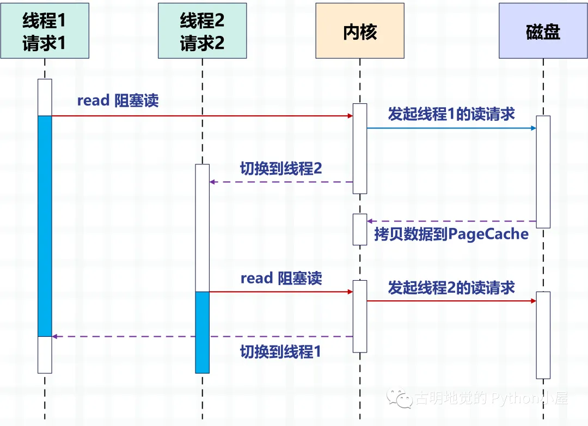
通过多线程的方式，一个线程处理一个请求，从而实现并发。但很明显，操作系统能创建的线程数是有限的，因为线程越多资源占用就越多，而且线程之间的切换成本也比较大，因为涉及到内核态和用户态之间的切换。
那么问题来了，怎么才能实现高并发呢？答案是「把上图中由内核实现的请求切换工作，交由用户态的代码来完成就可以了」。异步化编程通过应用层代码实现了请求切换，降低了切换成本和内存占用空间。
异步化依赖于 IO 多路复用机制，比如 Linux 的 epoll，同时，必须把阻塞方法更改为非阻塞方法，才能避免内核切换带来的巨大消耗。Nginx、Redis 等高性能服务都依赖异步化实现了百万量级的并发。
下图描述了异步 IO 的非阻塞读和异步框架结合后，是如何切换请求的。
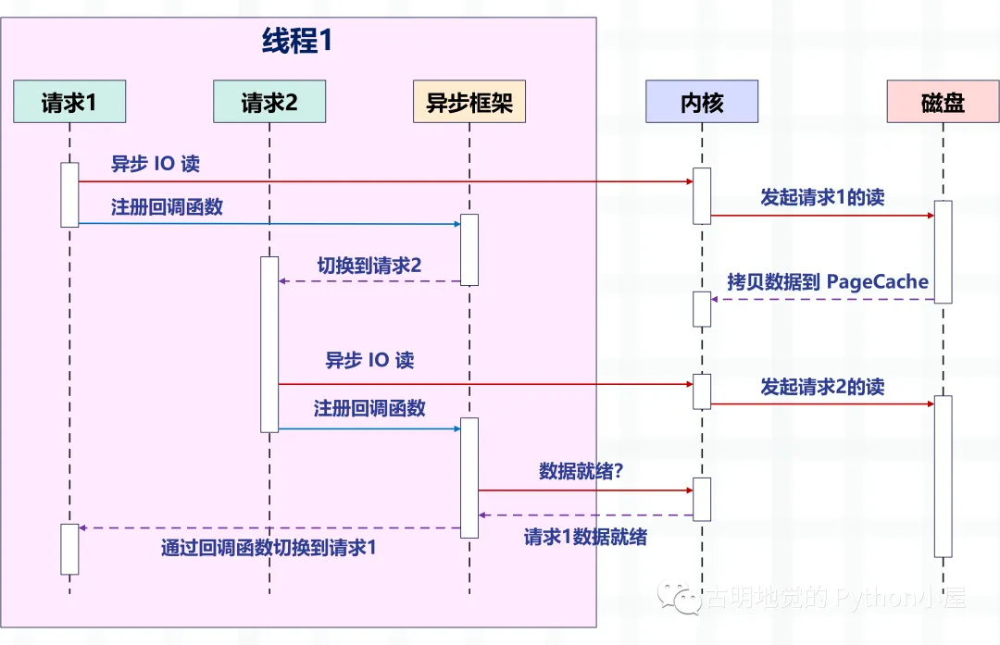
注意图中的变化，之前是一个线程处理一个请求，现在是一个线程处理多个请求，这就是我们之前说的「非阻塞+回调」的方式。它依赖操作系统提供的 IO 多路复用，比如 Linux 的 epoll，BSD 的 kqueue。
此时的读写操作都相当于一个事件，并为每一个事件都注册相应的回调函数，然后线程不会阻塞（因为读写操作此时是非阻塞的），而是可以做其它事情，然后由 epoll 来对这些事件进行统一管理。一旦事件发生（满足可读、可写时），那么 epoll 就会告知线程，然后线程执行为该事件注册的回调函数。
为了更好地理解，我们再以 Redis 为例，介绍一下非阻塞 IO 和 IO 多路复用。
127.0.0.1:6379> get name
"satori"
Redis 支持使用 get 命令，获取一个 key 对应的 value，那么问题来了，以上对于 Redis 服务端而言，都发生了哪些事情呢？
服务端必须要先监听客户端请求（bind/listen），然后当客户端到来时与其建立连接（accept），从 socket 中读取客户端的请求（recv），对请求进行解析（parse），这里解析出的请求类型是 get，key 是 "name"，再根据 key 获取对应的 value，最后返回给客户端，也就是向 socket 写入数据（send）。
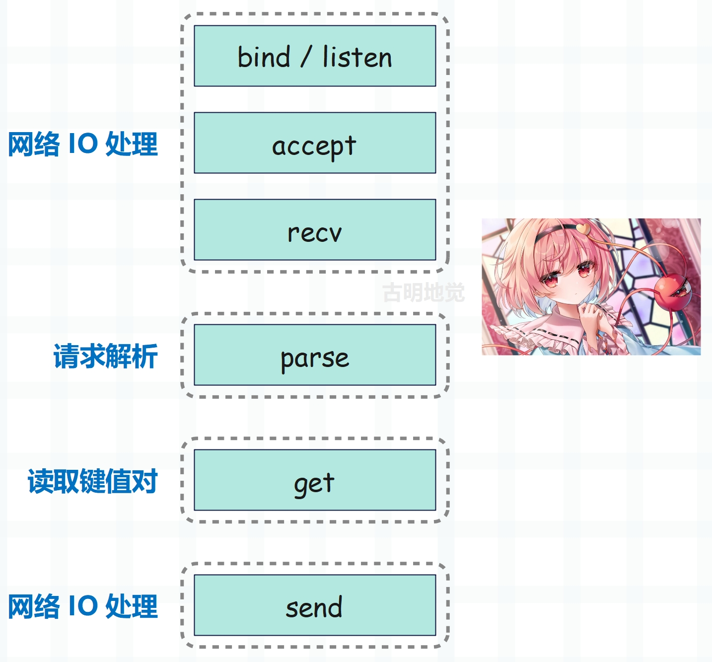
以上所有操作都是由 Redis 主线程依次执行的，但是里面会有潜在的阻塞点，分别是 accept 和 recv。
如果是阻塞 IO，当 Redis 监听到一个客户端有连接请求、但却一直未能成功建立连接，那么主线程会一直阻塞在 accept 函数这里，导致其它客户端无法和 Redis 建立连接。类似的，当 Redis 通过 recv 从客户端读取数据时，如果数据一直没有到达，那么 Redis 主线程也会一直阻塞在 recv 这一步，因此这就导致了 Redis 的效率会变得低下。
非阻塞 IO
但很明显，Redis 不会允许这种情况发生，因为以上都是阻塞 IO 会面临的情况，而 Redis 采用的是非阻塞 IO，也就是将 socket 设置成了非阻塞模式。首先在 socket 模型中，调用 socket() 方法会返回主动套接字；调用 bind() 方法绑定 IP 和 端口，再调用 listen() 方法将主动套接字转化为监听套接字；最后监听套接字调用 accept() 方法等待客户端连接的到来，当和客户端建立连接时再返回已连接套接字，而后续就通过已连接套接字来和客户端进行数据的接收与发送。
但是注意：我们说在 listen() 这一步，会将主动套接字转化为监听套接字，而此时的监听套接字的类型是阻塞的，阻塞类型的监听套接字在调用 accept() 方法时，如果没有客户端来连接的话，就会一直处于阻塞状态，那么此时主线程就没法干其它事情了。所以在 listen() 的时候可以将其设置为非阻塞，而非阻塞的监听套接字在调用 accept() 时，如果没有客户端连接请求到达时，那么主线程就不会傻傻地等待了，而是会直接返回，然后去做其它的事情。
类似的，在创建已连接套接字的时候也可以将其类型设置为非阻塞，因为阻塞类型的已连接套接字在调用 send() / recv() 的时候也会处于阻塞状态，比如当客户端一直不发数据的时候，已连接套接字就会一直阻塞在 rev() 这一步。如果是非阻塞类型的已连接套接字，那么当调用 recv() 但却收不到数据时，也不用处于阻塞状态，同样可以直接返回去做其它事情。
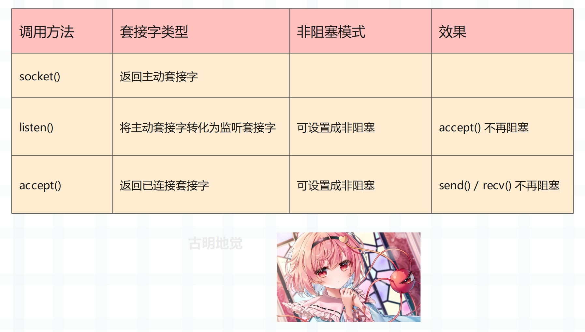
但是有两点需要注意：
1）虽然 accept() 不阻塞了，在没有客户端连接时 Redis 主线程可以去做其它事情，但如果后续有客户端来连接，Redis 要如何得知呢？因此必须要有一种机制，能够继续在监听套接字上等待后续连接请求，并在请求到来时通知 Redis。
2）send() / recv() 不阻塞了，相当于 IO 的读写流程不再是阻塞的，读写方法都会瞬间完成并且返回，也就是它会采用能读多少就读多少、能写多少就写多少的策略来执行 IO 操作，这显然更符合我们对性能的追求。但这样同样会面临一个问题，就是当执行读取操作时，有可能只读取了一部分数据，剩余的数据客户端还没发过来，那么这些数据何时可读呢？同理写数据也是这种情况，当缓冲区满了，而我们的数据还没有写完，那么剩下的数据又何时可写呢？因此同样要有一种机制，能够在 Redis 主线程做别的事情的时候继续监听已连接套接字，并且当有数据可读写的时候通知 Redis。
这样才能保证 Redis 线程既不会像基本 IO 模型中一直在阻塞点等待，也不会无法处理实际到达的客户端连接请求和可读写的数据，而上面所提到的机制便是 IO 多路复用。
IO 多路复用
I/O 多路复用机制是指一个线程处理多个 IO 流，也就是我们经常听到的 select/poll/epoll。关于这三者的区别以后再聊，它们所做的事情都一样，无非是性能和实现原理上有差异。select 是所有系统都支持，而 epoll 只有 Linux 支持。
简单来说，在 Redis 只运行单线程的情况下，该机制允许内核中同时存在多个监听套接字和已连接套接字。内核会一直监听这些套接字上的连接请求和数据请求，一旦有请求到达就会交给 Redis 线程处理，这样就实现了一个 Redis 线程处理多个 IO 流的效果。
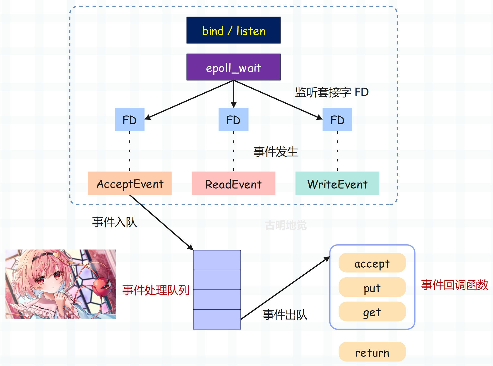
上图就是基于多路复用的 Redis IO 模型，图中的 FD 就是套接字，可以是监听套接字，也可以是已连接套接字，Redis 会通过 epoll 机制来让内核帮忙监听这些套接字。而此时 Redis 线程或者说主线程，不会阻塞在某一个特定的套接字上，也就是说不会阻塞在某一个特定的客户端请求处理上。因此 Redis 可以同时和多个客户端连接并处理请求，从而提升并发性。
但为了在请求到达时能够通知 Redis 线程，epoll 提供了基于事件的回调机制，即针对不同事件的发生，调用相应的处理函数。
那么回调机制是怎么工作的呢？以上图为例，首先 epoll 一旦监测到 FD 上有请求到达，就会触发相应的事件。这些事件会被放进一个队列中，Redis 主线程会对该事件队列不断进行处理，这样一来 Redis 就无需一直轮询是否有请求发生，从而避免资源的浪费。同时，Redis 在对事件队列中的事件进行处理时，会调用相应的处理函数，这就实现了基于事件的回调。因为 Redis 一直在对事件队列进行处理，所以能及时响应客户端请求，提升 Redis 的响应性能。
我们以实际的连接请求和数据读取请求为例，再解释一下。连接请求和数据读取请求分别对应 Accept 事件和 Read 事件，Redis 分别对这两个事件注册 accept 和 get 回调函数，当 Linux 内核监听到有连接请求或数据读取请求时，就会触发 Accept 事件或 Read 事件，然后通知主线程调用注册的 accept 函数或 get 函数。
就像病人去医院看病，在医生实际诊断之前每个病人（类似于请求）都需要先分诊、测体温、登记等等。如果这些工作都由医生完成，那么医生的工作效率就会很低。所以医院设置了分诊台，分诊台会一直处理这些诊断前的工作（类似于 Linux 内核监听请求），然后再转交给医生做实际诊断，这样即使一个医生（相当于 Redis 的主线程）也能有很高的效率。
这里需要再补充一下：我们上面提到的异步 IO 不是真正意义上的异步 IO，而是基于 IO 多路复用实现的异步化。但 IO 多路复用本质上是同步 IO，只是它可以同时监听多个文件描述符，一旦某个描述符的读写操作就绪，就能够通知应用程序进行相应的读写操作。至于真正意义的异步 IO，操作系统也是支持的，但支持的不太理想，所以现在使用的都是 IO 多用复用，并代指异步 IO。
为什么不推荐这种编程模式？
必须要承认的是，编写这种异步化代码能够带来很高的性能收益，Redis、Nginx 已经证明了这一点。但是这种编程模式在实际工作中很容易出错，因为所有的阻塞函数都需要通过非阻塞的系统调用加上回调注册的方式拆分成两个函数。说白了就是我们的逻辑不能直接执行，必须把它们放在一个单独的函数里面，然后这个函数以回调的方式注册给 IO 多路复用。
这种编程模式违反了软件工程的内聚性原则，函数之间同步数据也更复杂。特别是条件分支众多、涉及大量系统调用时，异步化的改造工作会非常困难，尽管它的性能很高。
下面我们用 Python 编写一段代码，实际体验一下这种编程模式，看看它复杂在哪里。
from urllib.parse import urlparse
import socket
from io import BytesIO
# selectors 里面提供了多种"多路复用器"
# 除了 select、poll、epoll 之外，还有 kqueue，这个是针对 BSD 平台的
try:
from selectors import (
SelectSelector,
PollSelector,
EpollSelector,
KqueueSelector
)
except ImportError:
pass
# 由于种类比较多，所以提供了 DefaultSelector
# 会根据当前的系统种类，自动选择一个合适的多路复用器
from selectors import (
DefaultSelector,
EVENT_READ, # 读事件
EVENT_WRITE, # 写事件
)
class RequestHandler:
"""
向指定的 url 发请求，获取返回的内容
"""
selector = DefaultSelector()
tasks = {"unfinished": 0}
def __init__(self, url):
"""
:param url: http://localhost:9999/v1/index
"""
self.tasks["unfinished"] += 1
url = urlparse(url)
# 根据 url 解析出域名、端口、查询路径
self.netloc = url.netloc # 域名:端口
self.path = url.path or "/" # 查询路径
self.client = socket.socket() # 创建 socket
self.client.setblocking(False) # 设置成非阻塞
self.buffer = BytesIO() # 用于接收数据的缓存
def get_result(self):
"""
发送请求，进行下载
:return:
"""
# 连接到指定的服务器
# 如果没有 : 说明只有域名没有端口，那么默认访问 80 端口
if ":" not in self.netloc:
host, port = self.netloc, 80
else:
host, port = self.netloc.split(":")
# 由于 socket 非阻塞，所以连接可能尚未建立好
try:
self.client.connect((host, int(port)))
except BlockingIOError:
pass
# 我们上面是建立连接，连接建立好就该发请求了
# 但是连接什么时候建立好我们并不知道，只能交给操作系统
# 所以需要通过 register 给 socket 注册一个回调函数
# 参数一：socket 的文件描述符
# 参数二：事件
# 参数三：当事件发生时执行的回调函数
self.selector.register(self.client.fileno(),
EVENT_WRITE,
self.send)
# 表示当 self.client 这个 socket 满足可写时，就去执行 self.send
# 翻译过来就是连接建立好了，就去发请求
# 可以看到，一个阻塞调用，我们必须拆成两个函数去写
def send(self, key):
"""
连接建立好之后，执行的回调函数
回调需要接收一个参数，这是一个 namedtuple
内部有如下字段：'fileobj', 'fd', 'events', 'data'
key.fd 就是 socket 的文件描述符
key.data 就是给 socket 绑定的回调
:param key:
:return:
"""
payload = (f"GET {self.path} HTTP/1.1\r\n"
f"Host: {self.netloc}\r\n"
"Connection: close\r\n\r\n")
# 执行此函数，说明事件已经触发，我们要将绑定的回调函数取消
self.selector.unregister(key.fd)
# 发送请求
self.client.send(payload.encode("utf-8"))
# 请求发送之后就要接收了，但是啥时候能接收呢？
# 还是要交给操作系统，所以仍然需要注册回调
self.selector.register(self.client.fileno(),
EVENT_READ,
self.recv)
# 表示当 self.client 这个 socket 满足可读时，就去执行 self.recv
# 翻译过来就是数据返回了，就去接收数据
def recv(self, key):
"""
数据返回时执行的回调函数
:param key:
:return:
"""
# 接收数据，但是只收了 1024 个字节
# 如果实际返回的数据超过了 1024 个字节怎么办？
data = self.client.recv(1024)
# 很简单，只要数据没收完，那么数据到来时就会可读
# 那么会再次调用此函数，直到数据接收完为止
# 注意：此时是非阻塞的，数据有多少就收多少
# 没有接收的数据，会等到下一次再接收，所以这里不能写 while True
if data:
# 如果有数据，那么写入到 buffer 中
self.buffer.write(data)
else:
# 否则说明数据读完了，那么将注册的回调取消
self.selector.unregister(key.fd)
# 此时就拿到了所有的数据
all_data = self.buffer.getvalue()
# 按照 \r\n\r\n 进行分隔得到列表
# 第一个元素是所有的响应头，第二个元素是响应体
result = all_data.split(b"\r\n\r\n")[1]
print(f"result: {result.decode('utf-8')}")
self.client.close()
self.tasks["unfinished"] -= 1
@classmethod
def run_until_complete(cls):
# 基于 IO 多路复用创建事件循环
# 驱动内核不断轮询 socket，检测事件是否发生
# 当事件发生时，调用相应的回调函数
while cls.tasks["unfinished"]:
# 轮询，返回事件已经就绪的 socket
ready = cls.selector.select()
# 这个 key 就是回调里面的 key
for key, mask in ready:
# 拿到回调函数并调用，这一步需要我们手动完成
callback = key.data
callback(key)
# 因此当事件发生时，调用绑定的回调，就是这么实现的
# 整个过程就是给 socket 绑定一个事件 + 回调
# 事件循环不停地轮询检测，一旦事件发生就会告知我们
# 但是调用回调不是内核自动完成的，而是由我们手动完成的
# "非阻塞 + 回调 + 基于 IO 多路复用的事件循环"
# 所有框架基本都是这个套路
一个简单的 url 获取，居然要写这么多代码，而它的好处就是性能高，因为不用把时间浪费在建立连接、等待数据上面。只要有事件发生，就会执行相应的回调，极大地提高了 CPU 利用率。而且这是单线程，也没有线程切换带来的开销。
那么下面测试一下吧。
import time
start = time.perf_counter()
for _ in range(10):
# 这里面只是注册了回调，但还没有真正执行
RequestHandler(url="http://localhost:9999/index").get_result()
# 创建事件循环，驱动执行
RequestHandler.run_until_complete()
end = time.perf_counter()
print(f"costs: {end - start}")
我用 FastAPI 编写了一个服务，监听 9999 端口，并提供了一个 /index 接口。为了更好地看到现象，服务里面刻意 sleep 了 1 秒，然后发送十次请求，看看效果如何。
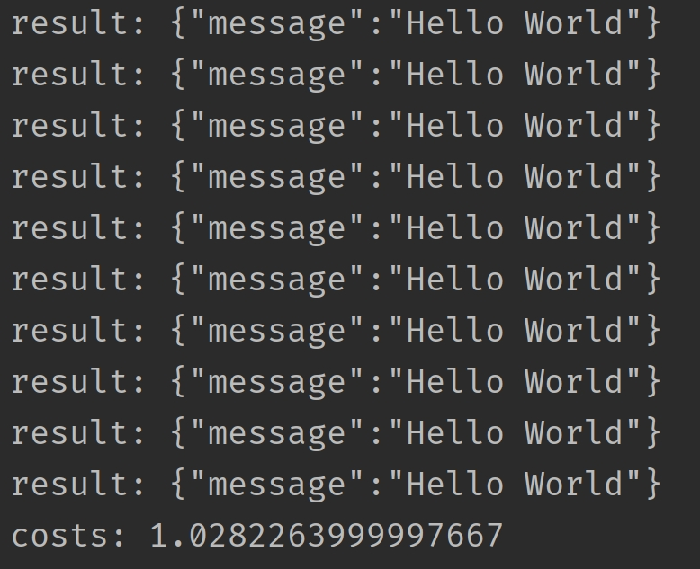
总共耗时 1 秒钟，我们再采用同步的方式进行编写，看看效果如何。
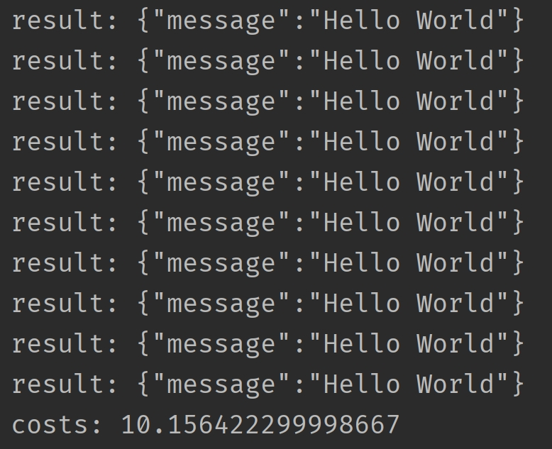
通过对比可以发现回调的这种写法性能非常高，但是它和我们传统的同步代码的写法大相径庭。如果是同步代码，那么会先建立连接、然后发送数据、再接收数据，这显然更符合我们人类的思维，逻辑自上而下，非常自然。
但是回调的方式就让人很不适应，我们在建立完连接之后，不能直接发送数据，必须要将发送数据的逻辑放在一个单独的函数（方法）中，然后再将这个函数以回调的方式注册进去。同理，在发送完数据之后也不能立刻接收，同样要将接收数据的逻辑放在一个单独的函数中，然后再以回调的方式注册进去。
所以好端端的自上而下的逻辑，因为回调而被分割的四分五裂，这种代码在编写和维护的时候是非常痛苦的。比如回调可能会层层嵌套，容易陷入回调地狱，如果某一个回调执行出错了怎么办？代码的可读性差导致不好排查，即便排查到了也难处理。
另外，如果多个回调需要共享一个变量该怎么办？因为回调是通过事件循环调用的，在注册回调的时候很难把变量传过去。简单的做法是把该变量设置为全局变量，或者说多个回调都是某个实例的方法，然后把共享的变量作为一个属性绑定在 self 上面。但当逻辑复杂时，就很容易导致全局变量满天飞的问题。
所以这种模式就使得开发人员在编写业务逻辑的同时，还要关注并发细节。
因此使用回调的方式编写异步化代码，虽然并发量能上去，但是对开发者很不友好；而使用同步的方式编写同步代码，虽然很容易理解，可并发量却又上不去。那么问题来了，有没有一种办法，能够让我们在享受异步化带来的高并发的同时，又能以同步的方式去编写代码呢？也就是我们能不能以同步的方式去编写异步化的代码呢？
答案是可以的，使用「协程」便可以办到。协程在异步化之上包了一层外衣，兼顾了开发效率与运行效率。
协程是如何实现高并发的？
协程与异步编程相似的地方在于，它们必须使用非阻塞的系统调用与内核交互，把切换请求的权力牢牢掌握在用户态的代码中。但不同的地方在于，协程把异步化中的两段函数，封装为一个阻塞的协程函数。
这个函数执行时，会使调用它的协程无感知地放弃执行权，由协程框架切换到其它就绪的协程继续执行。当这个函数的结果满足后，协程框架再选择合适的时机，切换回它所在的协程继续执行。我们还是以读取磁盘文件为例，看一张协程的示意图：
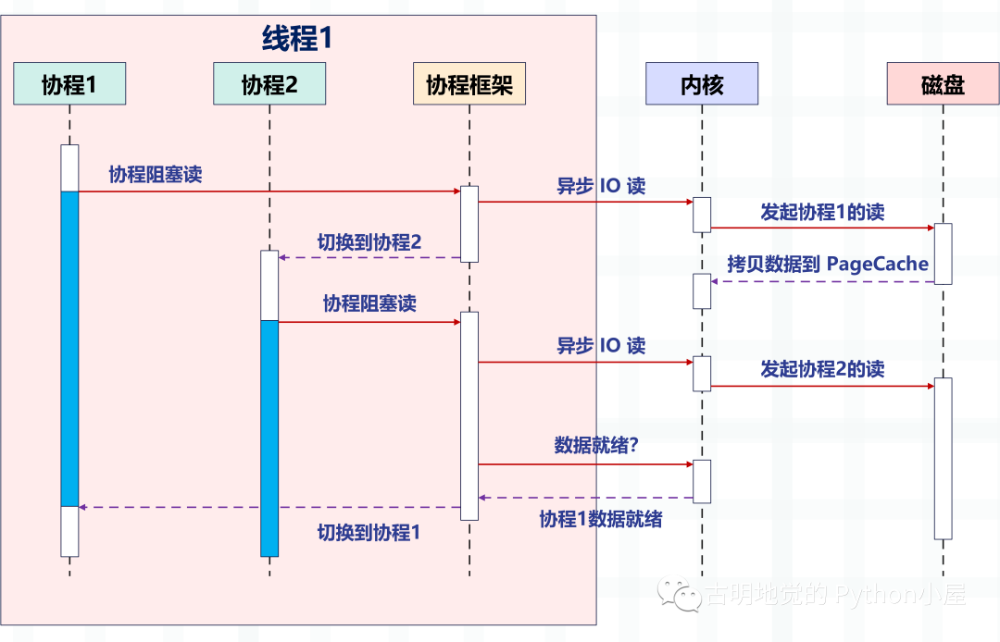
看起来非常棒，所以异步化是通过回调函数来完成请求切换的，业务逻辑与并发实现关联在一起，很容易出错。而协程不需要什么「回调函数」，它允许用户调用「阻塞的」协程方法，用同步编程方式写业务逻辑。
再回到之前的那个 socket 发请求的例子，我们用协程的方式重写一遍，看看它和基于回调的异步化编程有什么区别？
import time
from urllib.parse import urlparse
import asyncio
async def download(url):
url = urlparse(url)
# 域名:端口
netloc = url.netloc
if ":" not in netloc:
host, port = netloc, 80
else:
host, port = netloc.split(":")
path = url.path or "/"
# 创建连接
reader, writer = await asyncio.open_connection(host, port)
# 发送数据
payload = (f"GET {path} HTTP/1.1\r\n"
f"Host: {netloc}\r\n"
"Connection: close\r\n\r\n")
writer.write(payload.encode("utf-8"))
await writer.drain()
# 接收数据
result = (await reader.read()).split(b"\r\n\r\n")[1]
writer.close()
print(f"result: {result.decode('utf-8')}")
# 以上就是发送请求相关的逻辑
# 我们看到代码是自上而下的，没有涉及到任何的回调，完全就像写同步代码一样
async def main():
# 发送 10 个请求
await asyncio.gather(
*[download("http://localhost:9999/index")
for _ in range(10)]
)
start = time.perf_counter()
# 同样需要创建基于 IO 多路复用的事件循环
# 协程会被丢进事件循环中，依靠事件循环驱动执行
loop = asyncio.get_event_loop()
loop.run_until_complete(main())
end = time.perf_counter()
print(f"costs: {end - start}")
代码逻辑很好理解，和我们平时编写的同步代码没有太大的区别，那么它的效率如何呢？
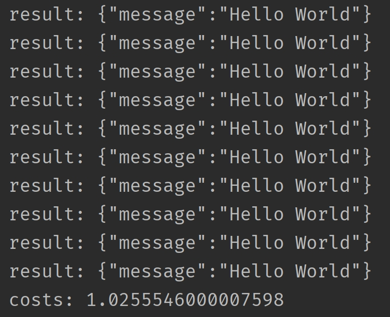
我们看到用了 1 秒钟，比同步的方式快，和异步化的方式差不多。但还是开始说的，协程并不比异步化的方式快，但我们之所以选择它，是因为它的编程模型更简单，能够让我们以同步的方式编写异步的代码。如果是基于回调方式的异步化，虽然性能很高（比如 Redis、Nginx），但对开发者是一个挑战。
回到上面那个协程的例子中，我们一共发了 10 个请求，并在可能阻塞的地方加上了 await。意思就是，在执行某个协程的 await 后面的代码时如果阻塞了，那么该协程会主动将执行权交给事件循环，然后事件循环再选择其它的协程执行。并且协程本质上也是个单线程，虽然协程可以有多个，但是背后的线程只有一个。
协程是如何切换的？
那么问题来了，协程的切换是如何完成的呢？
实际上，用户态的代码切换协程，与内核切换线程的原理是一样的。内核通过管理 CPU 的寄存器来切换线程，我们以最重要的栈寄存器和指令寄存器为例，看看协程切换时如何切换程序指令与内存。
每个线程有独立的栈，而栈既保留了变量的值，也保留了函数的调用关系、参数和返回值，CPU 中的栈寄存器 SP 指向了当前线程的栈，而指令寄存器 IP 保存着下一条要执行的指令地址。因此从线程 1 切换到线程 2 时，首先要把 SP、IP 寄存器的值为线程 1 保存下来，再从内存中找出线程 2 上一次切换前保存好的寄存器的值，并写入 CPU 的寄存器，这样就完成了线程切换（其它寄存器也需要管理、替换，原理与此相同，不再赘述）。
协程的切换与此相同，只是把内核的工作转移到协程框架来实现而已，下图是协程切换前的状态：
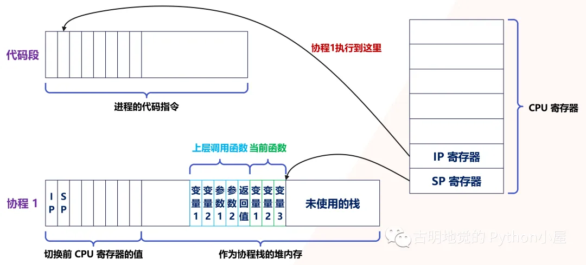
当遇到阻塞时会进行协程切换，从协程 1 切换到协程 2 后的状态如下图所示：
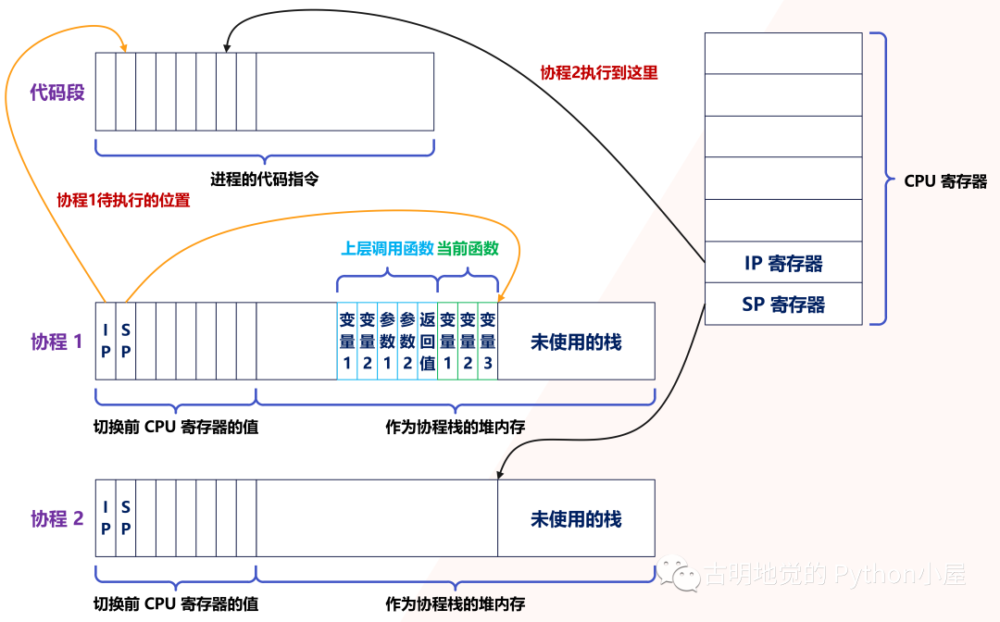
创建协程时，会从进程的堆中分配一段内存作为协程的栈。线程的栈有 8MB，而协程栈的大小通常只有几十 KB。而且，C 库内存池也不会为协程预分配内存，它感知不到协程的存在。这样，更低的内存占用空间为高并发提供了保证，毕竟十万并发请求，就意味着 10 万个协程。
另外栈缩小后，就尽量不要使用递归函数，也不能在栈中申请过多的内存，这是实现高并发必须付出的代价。当然啦，如果能像 Go 一样，协程栈可以自由伸缩的话，就不用担心了。
由此可见，协程就是用户态的线程。然而，为了保证所有切换都在用户态进行，协程必须重新封装所有的阻塞系统调用，否则一旦线程进入休眠状态，那么会导致所有的协程都得不到执行。
比如普通的 sleep 函数会让当前线程休眠，由内核来唤醒线程，而协程化改造后，sleep 只会让当前协程休眠，由协程框架在指定时间后唤醒协程，所以在 Python 的协程里面我们不能写 time.sleep，而是应该写 asyncio.sleep。再比如，线程间的互斥锁是使用信号量实现的，而信号量也会导致线程休眠，协程化改造互斥锁后，同样由框架来协调、同步各协程的执行。
所以协程高性能的基础是切换必须由用户态的代码完成，这要求协程生态是完整的，要尽量覆盖常见的组件。
还是以 Python 为例，我经常看见有人在 async def 里面写 requests.get 发请求，这是不对的。requests.get 底层调用的是同步阻塞的 socket，这会使得线程阻塞，而线程一旦阻塞，就会导致所有的协程阻塞，此时就等价于串行。所以把它放在 async def 里面没有任何意义，正确的做法是使用 aiohttp 或 httpx。因此如果想使用协程，那么需要重新封装底层的系统调用，如果实在没办法就扔到线程池中运行。
再比如 MySQL 官方提供的客户端 SDK，它使用了阻塞 socket 做网络访问，会导致线程休眠，必须用非阻塞 socket 把 SDK 改造为协程函数后，才能在协程中使用。
当然，并不是所有的函数都能用协程改造，比如磁盘的异步 IO 读，它虽然是非阻塞的，但无法使用 PageCache，反而降低了系统吞吐量。如果使用缓存 IO 读文件，在没有命中 PageCache 时是可能发生阻塞的。这个时候，如果对性能有更高的要求，就需要把线程与协程结合起来用，把可能阻塞的操作扔到线程池中执行，通过生产者 / 消费者模型与协程配合工作。
实际上，面对多核系统，也需要协程与线程配合工作。因为协程的载体是线程，而一个线程同一时刻只能使用一颗 CPU，所以通过开启更多的线程，将所有协程分布在这些线程中，就能充分使用 CPU 资源，有过 Go 语言开发经验的话，应该很清楚这一点。除此之外，为了让协程获得更多的 CPU 时间，还可以设置所在线程的优先级，比如在 Linux 中把线程的优先级设置到 -20，就可以每次获得更长的时间片。另外 CPU 缓存对程序性能也是有影响的，为了减少 CPU 缓存失效的比例，还可以把线程绑定到某个 CPU 上，增加协程执行时命中 CPU 缓存的机率。
虽然这里一直说协程框架在调度协程，然而你会发现，很多协程库只提供了创建、挂起、恢复执行等基本方法，并没有协程框架的存在，而是需要业务代码自行调度协程。这是因为，这些通用的协程库（比如 asyncio）并不是专为服务器设计的，服务器中可以由客户端网络连接的建立，驱动着创建出协程，同时伴随着请求的结束而终止。而在协程的运行条件不满足时，多路复用框架会将它挂起，并根据优先级策略选择另一个协程执行。因此，使用协程实现服务器端的高并发服务时，并不只是选择协程库，还要从其生态中找到结合 IO 多路复用的协程框架（比如 Tornado），这样可以加快开发速度。
一句话总结协程
从广义上讲，协程是一种轻量级的并发模型，说的比较高大上。但从狭义上讲，协程就是调用一个可以暂停并切换的函数。像我们使用 async def 定义的就是一个协程函数，本质上也是个函数，而调用协程函数就会得到一个协程。将协程丢进事件循环，由事件循环驱动执行，一旦发生阻塞，便将执行权主动交给事件循环，事件循环再驱动其它协程执行。所以自始至终都只有一个线程，而协程只不过是我们参考线程的结构，在用户态模拟出来的。
所以调用一个普通函数，会一直将内部的代码逻辑全部执行完；而调用一个协程函数，在内部出现了阻塞，那么会切换到其它的协程。
但是协程出现阻塞能够切换有一个重要的前提，就是这个阻塞不能涉及任何的系统调用，比如 time.sleep、同步的 socket 等等。这些都需要内核参与，而内核一旦参与了，那么造成的阻塞就不单单是阻塞某个协程那么简单了（OS 也感知不到协程），而是会使线程阻塞。线程一旦阻塞，在其之上的所有协程都会阻塞，由于协程是以线程作为载体的，实际执行的肯定是线程，如果每个协程都会使线程阻塞，那么这不就相当于串行了吗？
所以想使用协程，必须将阻塞的系统调用重新封装，我们举个栗子：
@app.get(r"/index1")
async def index1():
time.sleep(30)
return "index1"
@app.get(r"/index2")
async def index2():
return "index2"
这是一个基于 FastAPI 编写的服务，我们只看视图函数。如果先访问 /index1，然后访问 /index2，那么必须等到 30 秒之后，/index2 才会响应。因为这是单线程，/index1 里面的 time.sleep 会触发系统调用，使得整个线程都陷入阻塞，而线程一旦阻塞了，所有的协程就都别想执行了。
如果将上面的例子改一下：
@app.get(r"/index1")
async def index():
await asyncio.sleep(30)
return "index1"
@app.get(r"/index2")
async def index():
return "index2"
访问 /index1 依旧会进行 30 秒的休眠，但此时再访问 /index2 的话则是立刻返回。原因是 asyncio.sleep(30) 重新封装了阻塞的系统调用，此时的休眠是在用户态完成的，没有经过内核。换句话说，此时只会导致协程休眠，不会导致线程休眠，那么当访问 /index2 的时候，对应的协程会立刻执行，然后返回结果。
同理我们在发网络请求的时候，也不能使用 requests.get，因为它会导致线程阻塞。当然，还有一些数据库的驱动，例如 pymysql、psycopg2 等等，这些阻塞的都是线程。为此，在开发协程项目时，我们应该使用 aiohttp、asyncmy、asyncpg 等等。
为什么早期 Python 的协程都没有人用，原因就是协程想要运行，必须基于协程库 asyncio，但问题是 asyncio 只支持发送 TCP 请求（对于协程库而言足够了）。如果你想通过网络连接到某个组件（比如数据库、Redis），只能手动发 TCP 请求，而且这些组件对发送的数据还有格式要求，返回的数据也要手动解析，可以想象这是多么麻烦的事情。
如果想解决这一点，那么必须基于 asyncio 重新封装一个 SDK。所以同步 SDK 和协程 SDK 最大的区别就是，一个是基于同步阻塞的 socket，一个是基于 asyncio。比如 pymysql 和 asyncmy，连接的都是 MySQL，只是在 TCP 层面发送数据的方式不同，至于其它方面则是类似的。
而早期还没有出现这些协程 SDK，自己封装的话又是一个庞大的工程，所以 Python 的协程用起来就很艰难，因为达不到期望的效果。不像 Go 在语言层面上就支持协程，一个 go 关键字就搞定了。而且 Python 里面一处异步、处处异步，如果某处的阻塞切换不了，那么协程也就没有意义了。
不过现在协程相关的生态已经越来越完善，感谢这些开源的作者们，发送网络请求、连接数据库、编写 web 服务等等，都有协程化的 SDK 和框架，现在完全可以开发以协程为主导的项目了。
小结
本次我们从高并发的应用场景入手，分析了协程出现的背景和实现原理，以及它的应用范围。你会发现，协程融合了多线程与异步化编程的优点，既保证了开发效率，也提升了运行效率。有限的硬件资源下，多线程通过微观上时间片的切换，实现了同时服务上百个用户的能力。多线程的开发成本虽然低，但内存消耗大，切换次数过多，无法实现高并发。
异步编程方式通过非阻塞系统调用和多路复用，把原本属于内核的请求切换能力，放在用户态的代码中执行。这样不仅减少了每个请求的内存消耗，也降低了切换请求的成本，最终实现了高并发。然而异步编程违反了代码的内聚性，还需要业务代码关注并发细节，开发成本很高。
协程参考内核通过 CPU 寄存器切换线程的方法，在用户态代码中实现了协程的切换，既降低了切换请求的成本，也使得协程中的业务代码不用关注自己何时被挂起，何时被执行。相比异步编程中要维护一堆数据结构表示中间状态，协程直接用代码表示状态，大大提升了开发效率。但是在协程中调用的所有 API，都需要做非阻塞的协程化改造。优秀的协程生态下，常用服务都有对应的协程 SDK，方便业务代码使用。开发高并发服务时，与 IO 多路复用结合的协程框架可以与这些 SDK 配合，自动挂起、切换协程，进一步提升开发效率。
最后，协程并不是完全与线程无关。因为线程可以帮助协程充分使用多核 CPU 的计算力（Python 除外），而且遇到无法协程化、会触发系统调用的阻塞函数，或者计算太密集从而长时间占用 CPU 的任务，还是要放在独立的线程中，以防止它影响别的协程执行。
所以在使用协程的时候，最好再搭配一个线程池，如果某些阻塞必须要经过内核，实在无法协程化，那么就把它丢到线程池里面，在线程的层面完成切换。虽然开启多个线程会占用资源，还有线程切换会带来开销，但是为了让经过内核的阻塞能够切换，这是无法避免的，只能将希望寄托于线程；当然，CPU 过度密集的任务，也可以考虑扔到线程池。可能有人好奇，如果能利用多核，那么扔到线程池是理所应当的，但是 Python 的多线程用不了多核呀，为什么要这么做呢？原因很简单，如果只有单个线程，那么这种 CPU 过度密集的任务会长时间霸占 CPU 资源，导致其它任务得不到执行。而开启多线程，虽然还是只有一个核，但是由于 GIL 会使得线程切换，所以不会出现「楚王好细腰，后宫多饿死」的情况，CPU 能够雨露均沾，让所有任务都得到执行。
本文参考自：
- 极客时间，陶辉《系统性能调优必知必会》
- 极客时间，蒋德钧《Redis 核心技术与实战》
欢迎大家关注我的公众号：古明地觉的编程教室。

如果觉得文章对你有所帮助，也可以请作者吃个馒头，Thanks♪(･ω･)ﾉ。